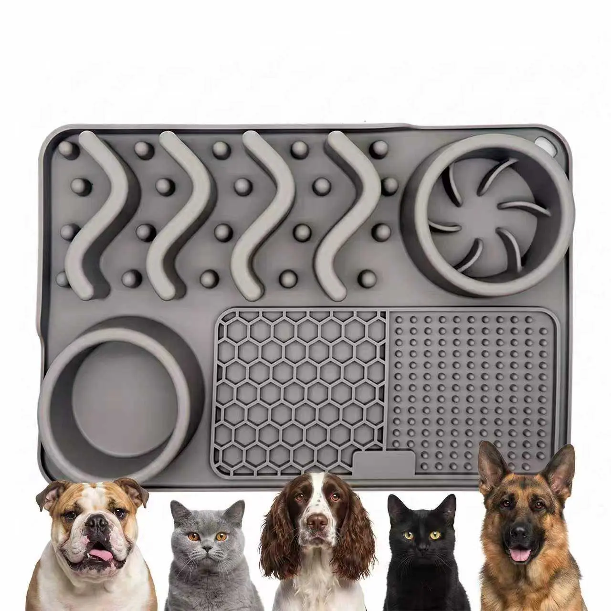
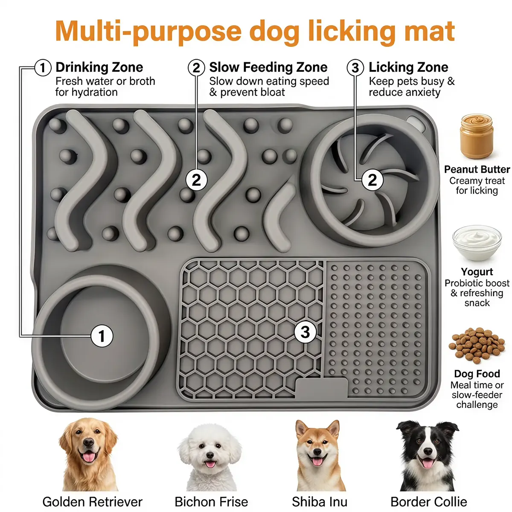
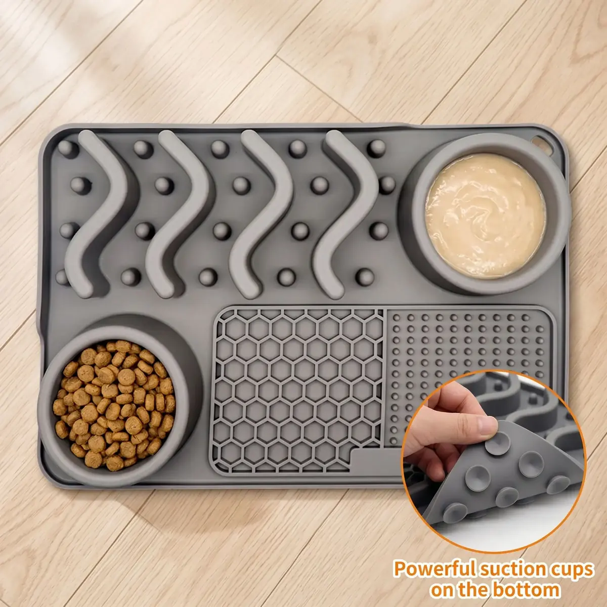
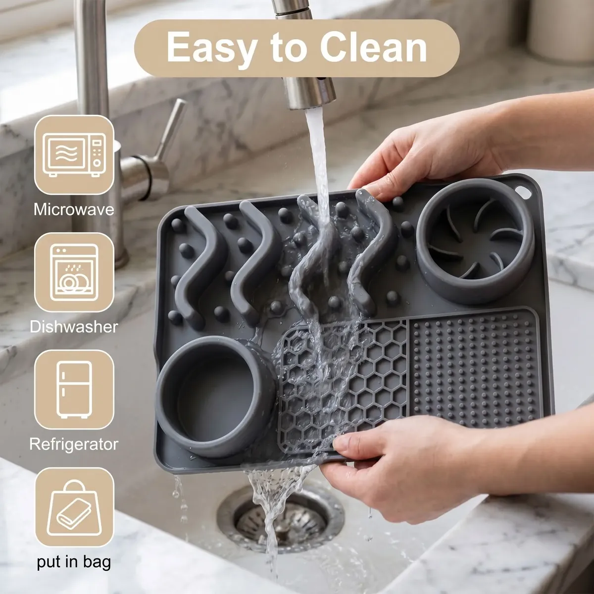
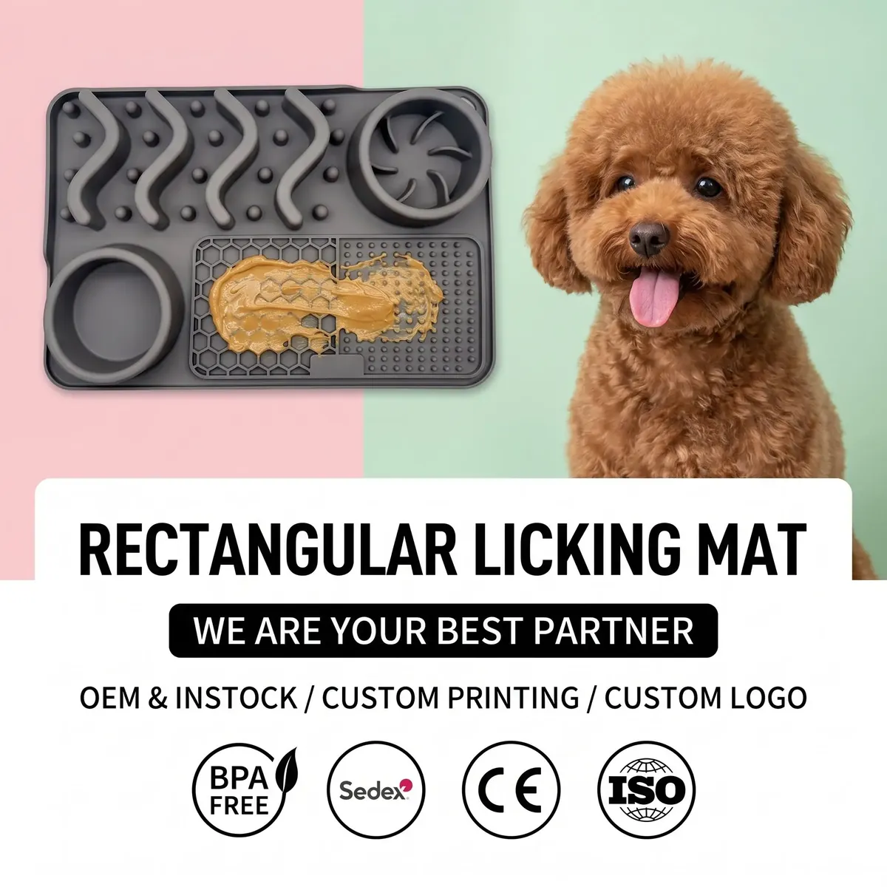

Square Silicone Lick Mat with Suction Cups
S 15.5 cm · L 20 cm · 6 colors · suction base · SKU LM-004
View Product
Multi-Zone Silicone Dog Lick Mat with Suction Base
Request a Quote



Available Colors
Custom colors available for OEM orders
| Material | Silicone (LFGB- and FDA-tested food-grade — test reports available on request) |
|---|---|
| Material reports | LFGB / FDA / REACH — silicone parts; reports on request |
| Dimensions | 304 × 204mm (approx. 12 × 8 in) |
| Weight | Approx. 397g |
| Colors | Green, Grey, Purple, Creamy White, Sky Blue, Black, Mint Green |
| Base | Suction base (smooth flat surface recommended) |
| MOQ | From 10 pcs (stock colours) · custom colour or logo quoted on request |
| Sample Lead Time | Approx. 7 days |
| Production Lead Time | 15–25 days after sample approval |
| Customization | Logo, color, packaging available |
| SKU | LM-018 |
The LM-018 features three distinct feeding zones in one mat: raised ridge zones that slow dry food consumption, a flat lick surface for wet food and spreads, and raised cup zones that hold treats or small amounts of liquid. The multi-zone design means one product covers a wider range of feeding needs, which is a key selling point for retail and private label buyers. Suitable for dogs and cats of all sizes.
The suction base keeps the mat stable on smooth floor surfaces (tile, hardwood, laminate) during active feeding. This addresses one of the most common buyer complaints about lick mats — mats sliding around during use. Works best on clean, flat surfaces.
Made from food-contact safe silicone. Non-toxic, BPA-free, odorless. Silicone does not retain food odors or bacteria between uses. This product is made from LFGB- and FDA-tested food-grade silicone; test reports are available before order placement.
Dishwasher safe — top rack recommended. The multi-zone surface can be rinsed under running water; the silicone does not trap residue in the same way plastic does. Easy cleaning is a consistent positive point in end-user reviews for silicone lick mats.
Available for wholesale and private label. Customization options:
The raised ridges are designed for dry or semi-dry food — the dog has to push food through the channels, which slows eating. The flat lick surface is for wet food, yogurt, peanut butter or similar spreadables, which the dog licks off the smooth surface.
The suction base works best on smooth, flat surfaces such as tile, hardwood and laminate. It does not grip well on textured surfaces or carpets.
Yes. We support logo customization (silk print or laser engraving) and branded packaging. Contact us with your requirements and we will provide a quote and sample arrangement.
Yes. We handle FNSKU labeling and FBA-compliant packaging and can ship directly to Amazon fulfillment centers in the US, UK and EU.
S 15.5 cm · L 20 cm · 6 colors · suction base · SKU LM-004
View Product
20 × 20 cm · 64 suction cups · Grey / Blue · SKU LM-005
View Product
S 15 cm · L 21 cm · scraper included · Blue / Orange · SKU LM-006
View Product